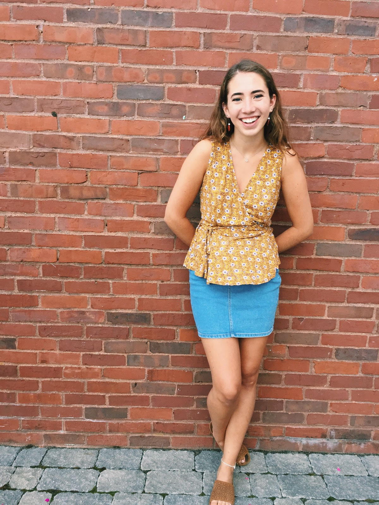

About Molly
My name is Molly McDevitt and I am a twenty year old beginning a fulfilling career in web development. I graduated from Portsmouth High School in 2016 and decided to forego the typical college route to instead travel and take more time to discover my true passions.
After a year of splitting my time between travel and work, I decided to try my hand at different job opportunities, which eventually led me to a conversation with a family friend who has over twenty five years of experience as a woman in technology. The exchange sparked an interest and as I dove deeper into my research of the industry, I realized the incredible creative and professional opportunities available to full stack developers - and here we are!
Outside of web development I enjoy reading, playing and writing music, poetry, yoga and being in nature. I believe that we are defined by our passions and our willingness to pursue them, and I am extremely excited to begin cultivating mine for web development!